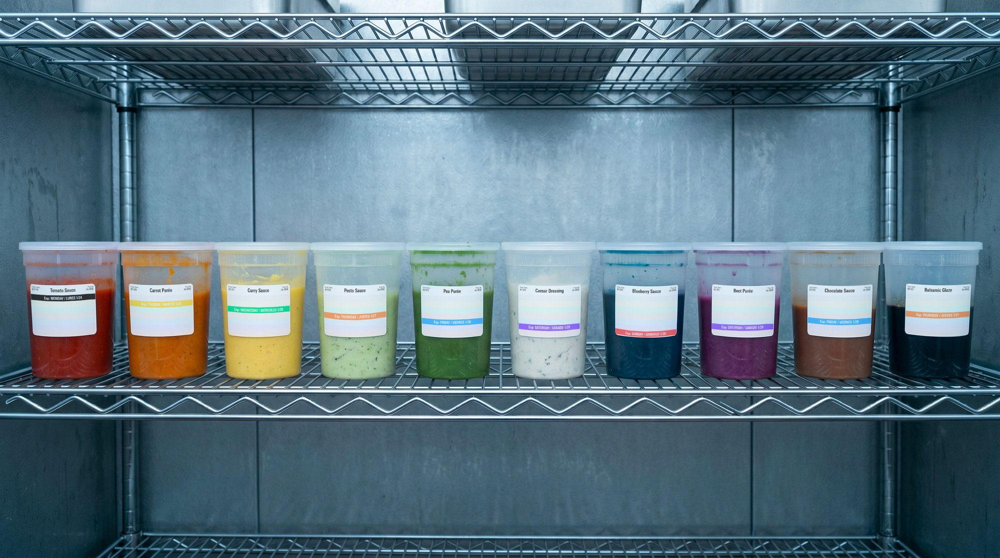
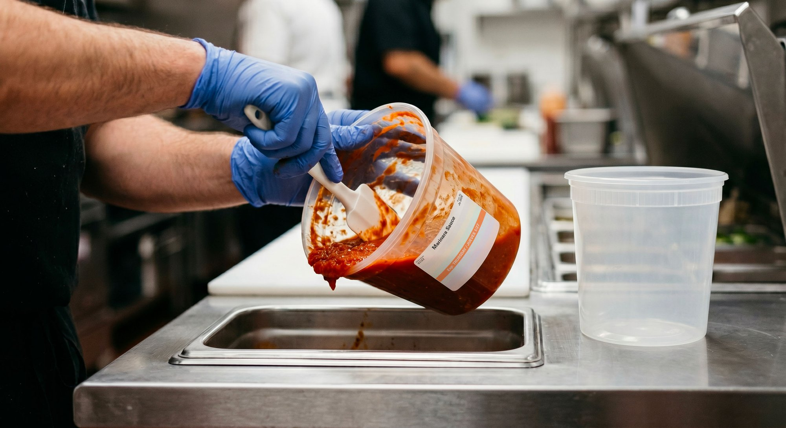

March 12, 2026 · FIFO
Rotation does not require extra steps on the line—it requires visibility that matches the pace of service.
Read more

February 4, 2026 · Multi-unit
Inconsistency between kitchens doesn’t show up in any one location. It shows up as a slow, invisible tax across all of them.
Read more

February 28, 2026 · Compliance
Scratch kitchens aren’t being beaten by their team’s discipline. They’re being beaten by labeling systems built for someone else’s kitchen.
Read more

January 22, 2026 · Food safety
Most evaluation checklists ask what a labeling system can do. The questions that actually predict whether it will work are different.
Read more

January 8, 2026 · FIFO
The brain processes color in 200 milliseconds and reads text in 600. In a busy walk-in, that gap is the difference between FIFO that works and FIFO that doesn’t.
Read more

December 15, 2025 · Operations
Most avoidable waste isn’t the dramatic moments. It’s the four-second discard decision a sous chef makes when the date isn’t clear.
Read more